Everest Base Camp vs. Annapurna Circuit at a Glance
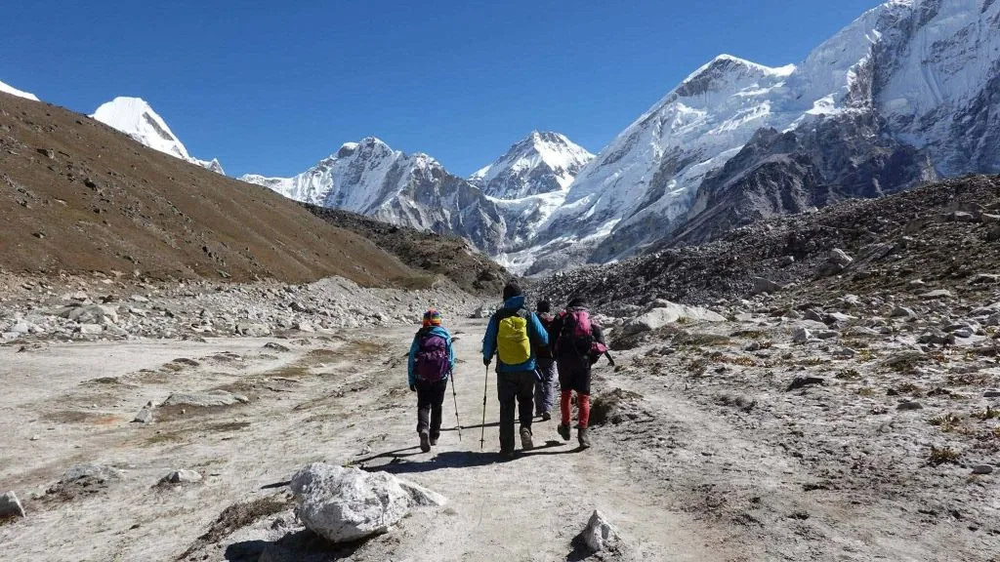
When travelers think of trekking in Nepal, two monumental routes instantly dominate the conversation: the legendary pilgrimage to the foot of Mt. Everest in the Khumbu, and the classic horseshoe traverse encircling the Annapurna massif. While both treks belong on any serious hiker's life list, they deliver remarkably distinct mountain journeys.
Everest Base Camp is an uncompromising high-altitude trek that takes you deep into the home of the world's highest peaks, immersing you in raw rock, blue glacial ice, and centuries-old Sherpa traditions. In contrast, the Annapurna Circuit is a grand ecological and cultural odyssey that begins in lush subtropical river valleys, climbs through dense rhododendron and alpine pine forests, crosses a windswept 5,416-meter mountain pass, and drops into the arid, Tibetan-influenced rain shadow of Mustang.
Before diving deep into individual trail factors, review our comprehensive side-by-side comparison below:
| Factor | Everest Base Camp (EBC) | Annapurna Circuit (ACT) |
|---|---|---|
| Typical Trekking Experience | High-alpine in-and-out valley trek leading directly to the base of Mt. Everest and the Khumbu Glacier. | Grand horseshoe circuit encircling the Annapurna Massif across distinct climate zones and river valleys. |
| Route Style | Linear out-and-back trail (you return along much of the same trail from Gorak Shep back to Lukla). | Continuous loop circuit connecting the Marsyangdi River Valley with the Kali Gandaki Gorge. |
| Highest Trekking Point | Kala Patthar (5,545 m / 18,192 ft); Everest Base Camp itself sits at 5,364 m (17,598 ft). | Thorong La Pass (5,416 m / 17,769 ft) between Manang and Muktinath. |
| Approximate Duration | 12 to 14 days (standard Kathmandu to Kathmandu with built-in acclimatization). | 12 to 18 days (flexible depending on starting trailheads and whether modern jeep roads are utilized). |
| Difficulty Rating | Strenuous: Long sustained exposure to extreme altitude above 4,000 meters. | Moderate to Strenuous: Moderate daily walking, culminating in one grueling pass crossing. |
| Altitude Exposure | 5 to 6 consecutive nights sleeping above 4,000m (13,100 ft) and 2 nights above 4,900m. | Gradual ascent; only 1 or 2 nights sleeping above 4,500m before rapid descent to 3,760m. |
| Scenery & Landscapes | Towering vertical granite walls, massive glaciers, moraines, high-altitude alpine scrub. | Incredible variety: subtropical jungle, terraced paddy fields, pine woods, alpine tundra, arid rain shadow. |
| Cultural Experience | Deeply authentic Sherpa Tibetan-Buddhist heritage, historic monasteries, chortens, prayer flags. | Rich multi-ethnic mosaic: Gurung, Magar, Hindu pilgrimage temples, Manange Buddhists, and Thakali people. |
| Accommodation Style | High-density mountain teahouses; heated dining halls; premium luxury lodges available on lower trail. | Traditional family-run teahouses; apple orchards in lower Mustang; rustic high-altitude huts. |
| Access Transportation | Domestic mountain flight to Lukla (2,846m) or a 2-day rough overland jeep drive via Tham Danda. | Overland 4WD jeep or private vehicle from Kathmandu or Pokhara directly to the trailhead (Besisahar/Dharapani). |
| Budget Level | Higher: Domestic flights and remote air-lifted supply logistics raise overall trip cost. | Moderate: Road-based logistics and lower-altitude local agriculture make food and stays more affordable. |
| Trail Traffic & Crowds | High volume in peak seasons (Oct/Nov & Apr/May) along a single, focused trail corridor. | Moderate to high volume, but traffic disperses over a much longer physical route and multiple variations. |
| Best Suited For | Trekkers focused on mountain prestige, mountaineering history, and high-altitude challenge. | Trekkers seeking landscape transitions, cultural diversity, and classic mountain pass crossings. |
| Main Trail Challenge | Prolonged thin air, cold night temperatures, and volatile flight schedules at Lukla airport. | Pre-dawn 900m ascent to Thorong La in sub-zero winds, followed by a steep 1,600m knee-jarring descent. |
| Main Trail Advantage | Standing right beside the legendary Khumbu Icefall beneath the highest point on Earth. | Experiencing the complete ecological spectrum of Nepal within a single unbroken trek. |
Everest Base Camp: What the Trek Is Really Like
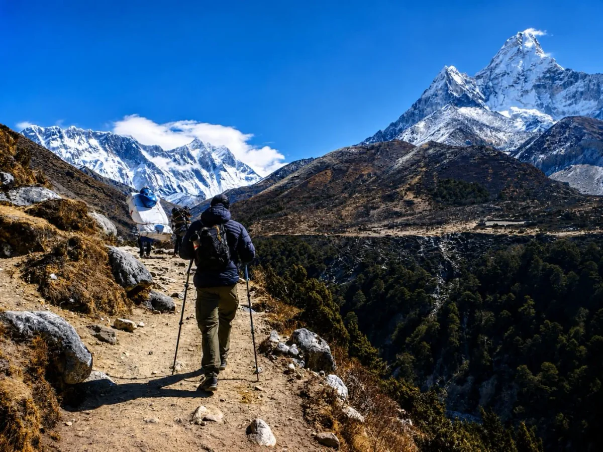
Trekking to Everest Base Camp is an expedition into the spiritual heartland of world mountaineering. Your adventure begins the moment your small Twin Otter aircraft navigates the cloud-shrouded mountain passes of eastern Nepal and touches down on the dramatically angled runway of Tenzing-Hillary Airport in Lukla (2,846 m). For the next two weeks, there are no roads, no vehicles, and no bicycles—every bag of rice, every piece of trekking equipment, and every person moves entirely by foot, yak, or helicopter.
From Lukla, the trail winds alongside the roaring, turquoise waters of the Dudh Koshi River, crossing soaring steel suspension bridges festooned with vibrant Buddhist prayer flags. You ascend through lush pine forests into Namche Bazaar (3,440 m), the bustling amphitheater town that serves as the commercial hub of the Sherpa homeland. Here, trekkers spend their first mandatory acclimatization day, taking high-altitude training hikes to the Everest View Hotel to catch their first breathtaking glimpse of Mt. Everest, Nuptse, and the iconic pyramid of Ama Dablam.
As you ascend past the spiritual sanctuary of Tengboche Monastery (3,860 m) and cross above the treeline into Dingboche (4,410 m) and Lobuche (4,940 m), the landscape sheds its green coat entirely. You enter an Arctic alpine wilderness defined by scree, glacial moraines, and sheer frozen summits that pierce the deep sapphire sky.
The climax of the route is twofold. First, walking across the rocky spine of the Khumbu Glacier to touch the historic rock marking Everest Base Camp (5,364 m), right where spring expedition teams set up their yellow tent city beneath the perilous Khumbu Icefall. Second—and often considered the emotional highlight—is an arduous pre-dawn climb up the dark slopes of Kala Patthar (5,545 m / 18,192 ft). From this rocky summit, as the first morning sunburst illuminates the razor-sharp ridge of Everest and the colossal south face of Nuptse, travelers understand why this trail is celebrated as the greatest mountain journey in the world.
The Everest Base Camp trek is not merely about reaching an altitude coordinate on a GPS. It is an emotional walk through living history. When you pass the stone chortens at Thokla Pass memorializing mountaineers who perished on the high peaks, or sit in silence inside the wood-paneled prayer hall of Tengboche Monastery while monks chant morning puja, you feel an ancient reverence that stays with you forever.
Annapurna Circuit: What the Trek Is Really Like

If Everest Base Camp is an intense vertical cathedral, the Annapurna Circuit is an epic widescreen cinema that unfolds over hundreds of kilometers. Recognized globally since Nepal opened its borders to foreigners in 1977, the Circuit circuits the massive Annapurna Himal, home to Annapurna I (8,091 m)—the first 8,000-meter peak ever summited by humankind.
The journey begins in the lush lower valleys of the Marsyangdi River. Modern treks typically start around Besisahar, Dharapani, or Chame (1,400 m to 2,670 m). The early days are filled with the roar of thundering waterfalls, lush subtropical vegetation, emerald rice terraces, and dense bamboo groves. As you gain elevation, the jungle gives way to fragrant Himalayan pine, fir, and juniper forests, before clearing into the wide, glaciated amphitheater of the upper Manang Valley.
In Manang (3,519 m), trekkers pause for acclimatization, visiting centuries-old cliffside gompas, exploring the turquoise glacial waters of Gangapurna Lake, or embarking on an adventurous side-trip to Tilicho Lake (4,919 m)—one of the highest alpine lakes on Earth.
The undisputed test of the Annapurna Circuit is crossing Thorong La Pass (5,416 m / 17,769 ft). Hikers awaken at 3:30 AM in the freezing high-altitude outpost of Thorong Phedi or High Camp, strapping on headlamps to begin the relentless 900-meter climb under a sky dense with shooting stars. Cresting the prayer-flag-strewn summit of the pass as dawn turns the surrounding snow peaks golden is an exhilarating triumph.
Immediately following the pass, the Circuit unveils its greatest secret: you step over the continental divide into the rain-shadow desert of Lower Mustang. In a single afternoon, the alpine chill transitions into the sun-drenched, arid canyons of Muktinath (3,760 m)—a sacred pilgrimage sanctuary revered by both Hindus and Buddhists—before descending into the windy apple orchards of Marpha and the world's deepest gorge along the Kali Gandaki River.
Which Trek Is Harder? Difficulty and Fitness Compared
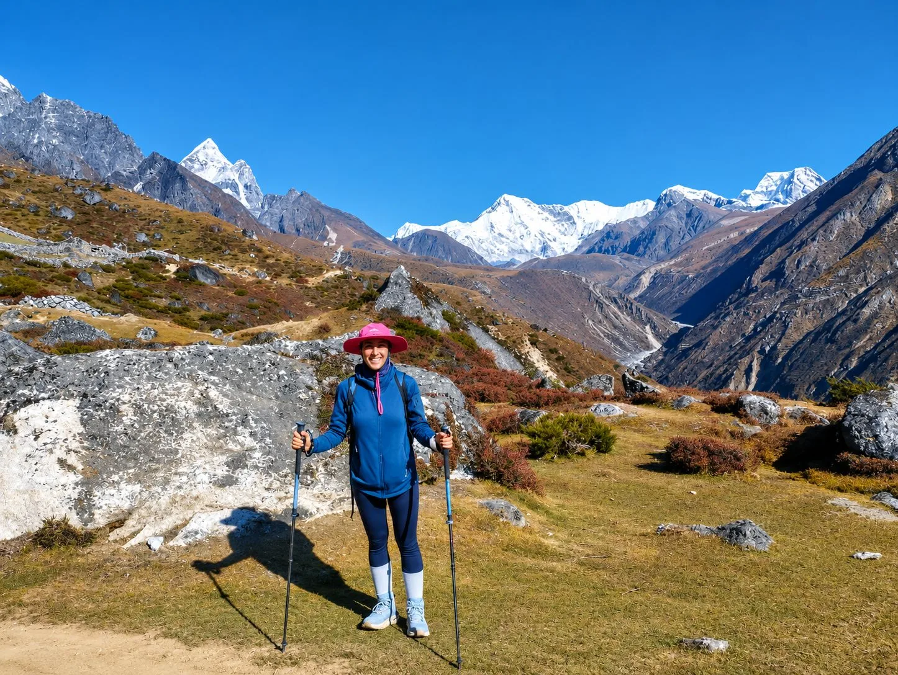
Travelers frequently ask our guides: "Is EBC harder than the Annapurna Circuit?" The honest answer is that both treks demand excellent physical fitness and mental endurance, but they test your body in entirely different ways.
Instead of labeling one route as universally "tougher," let's break down the physical realities of both trails:
Everest Base Camp: Sustained Altitude Stress
- The Primary Challenge: Sustained exposure to thin air. You fly straight into 2,846m at Lukla and spend 5 to 6 consecutive days living and sleeping above 4,000 meters (13,100 ft).
- Daily Physical Pace: Moderate walking distances (10–14 km per day), but every step requires significantly more cardiovascular effort because atmospheric oxygen is reduced to 50–55%.
- Trail Terrain: Rocky glacial moraines, rough scree paths, steep stone staircases, and unstable boulders around Gorak Shep.
- Nighttime Recovery: Sleeping at 4,900m+ is restless; nighttime temperatures routinely drop to -10°C to -20°C in unheated lodge bedrooms.
Annapurna Circuit: High Mountain Pass & Distance
- The Primary Challenge: One monumental summit day (Thorong La) combined with longer cumulative trail distances.
- Daily Physical Pace: More walking hours per day in the first week, but lower altitude allows your muscles and lungs to recover deeply each night in warmer villages.
- The Crux Day: Thorong La requires an 8- to 10-hour push: climbing 900 vertical meters in freezing pre-dawn darkness, followed by a punishing 1,600m descent to Muktinath.
- Trail Terrain: Smooth dirt trails, forested footpaths, and wide river beds, turning to steep scree and hard snow near the pass.
The Verdict on Difficulty: If you struggle with altitude, thin air, or cold sleeping environments, Everest Base Camp will feel substantially harder. If you struggle with long continuous hiking days or steep, knee-taxing descents, the pass-crossing day on the Annapurna Circuit will prove the more punishing physical test.
Altitude and Acclimatization: What You Need to Know

High-altitude physiology is the single most critical factor determining success and safety on both Himalayan journeys. Acute Mountain Sickness (AMS), High Altitude Pulmonary Edema (HAPE), and High Altitude Cerebral Edema (HACE) are serious medical conditions that can affect anyone, regardless of age, physical fitness, or prior athletic achievements. In the high Khumbu and Manang, volunteer physicians at the Himalayan Rescue Association (HRA) operate seasonal high-altitude medical clinics in Pheriche and Manang to diagnose altitude illnesses, provide consultation, and offer daily preventive health briefings.
On the Everest Base Camp route, acclimatization is front-loaded. You gain elevation rapidly in the first 48 hours: Kathmandu (1,400 m) to Lukla (2,846 m) to Namche Bazaar (3,440 m). To allow your red blood cells to adapt, reputable operators mandate a full rest and active acclimatization day in Namche, followed by a second acclimatization day in Dingboche (4,410 m).
On the Annapurna Circuit, natural acclimatization is superior because you hike progressively up the Marsyangdi Valley over 7 to 9 continuous days before attempting Thorong La Pass. Your body adapts organically as you climb through Dharapani (1,860 m), Chame (2,670 m), Pisang (3,200 m), and Manang (3,519 m).
Core High-Altitude Safety Guidelines
- Climb High, Sleep Low: Take daytime hikes 300 to 500 meters above your overnight village, then descend to sleep.
- Hydrate Aggressively: Drink 3.5 to 5 liters of clean water and warm tea daily. Respiration at high altitude strips moisture rapidly from your lungs.
- The "Bistari, Bistari" Rule: Hike at a conversational pace. If you cannot speak a complete sentence without gasping for breath, you are walking too fast.
- Pulse Oximeter Monitoring: Certified Igloo Himalaya Treks guides carry fingertip pulse oximeters to check blood oxygen saturation (SpO2) and resting heart rates twice daily at breakfast and dinner.
Scenery: Everest's Dramatic High Mountains vs. Annapurna's Changing Landscapes

Both regions showcase some of the most spectacular topography on planet Earth, but their visual narratives are fundamentally different.
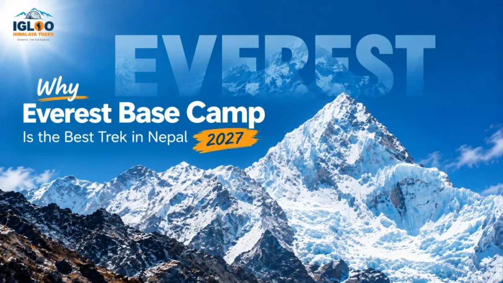
Everest: The High-Alpine Amphitheater
Everest delivers raw, monolithic, vertical grandeur. From Day 3 onwards, you are locked within high mountain corridors flanked by giants. You hike beneath the razor-sharp fluted ice ridges of Ama Dablam, stare up at the colossal 3,000-meter vertical south face of Lhotse, and walk directly beside the active terminal moraines of the Khumbu Glacier.
The color palette is austere and majestic: stark white snow, gunmetal gray granite, vibrant prayer flags, and deep azure skies. If your ultimate dream is to be surrounded by 8,000-meter peaks from morning until sunset, Everest has no equal.

Annapurna: The Grand Ecological Spectrum
The Annapurna Circuit is a masterclass in dynamic geographic transformation. Within a single trek, you witness virtually every ecosystem found in Nepal. You begin in lush green sub-tropical gorges with terraced farms, hike through moss-draped oak and rhododendron forests, transition into alpine pine woodlands, enter barren glacial moraines, and finally drop into the dry, windswept moonscape of Mustang.
The mountain panoramas are broader and more expansive. You enjoy sweeping 360-degree vistas of Annapurna I, II, III, IV, Dhaulagiri (8,167 m), Gangapurna, Nilgiri, and the sacred unclimbed spire of Machapuchare (Fishtail).
Culture and Local Experience: Sherpa Traditions vs. Multi-Ethnic Tapestry
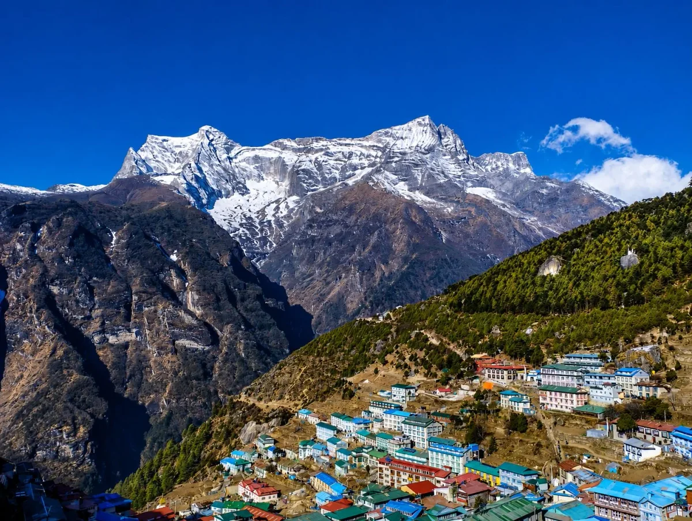
A Himalayan trek is far more than a wilderness hike; it is an intimate cultural encounter with mountain communities who have lived in harmony with these formidable peaks for centuries.
The Everest Region: Sacred Sherpa Buddhist Culture
The Khumbu is the sacred home of the Sherpa people, an ethnic group of Tibetan origin who migrated across the high Himalayan passes centuries ago. In the Everest region, Buddhism is woven into the very fabric of daily life. Every village is entered by passing carved stone mani walls (always kept to your right as a mark of respect), spinning brass prayer wheels, and walking beneath colorful prayer flags carrying mantras on the mountain breeze.
The cultural heartbeat of the valley is Tengboche Monastery, where the Rinpoche blesses expeditions heading to the high summits. Trekkers can also visit Khumjung Monastery, home to a revered "yeti scalp" relic, and learn how the mountaineering industry and Sherpa culture have evolved together.
The Annapurna Circuit: A Rich Multi-Ethnic Crossroads
Because the Annapurna Circuit traverses different geographic zones and political districts, it exposes trekkers to extraordinary cultural variety.
- Lower Valleys: Hindu Brahmin, Chhetri, and Gurung farming communities cultivating terraced fields of millet, corn, and mustard.
- Middle Hills: Buddhist Gurung and Tamang villages with traditional slate-roofed stone houses and intricate woodcarvings.
- Upper Manang Valley: The unique Manange people, skilled high-altitude traders who follow Tibetan Buddhism, maintaining cliffside hermitages and ancient monasteries like Braga Gompa (over 500 years old).
- Mustang Side (Muktinath & Jomsom): Ancient Thakali culture, legendary across Nepal for their immaculate hospitality, stone-paved villages, apple brandy distilleries, and the sacred Muktinath temple where 108 stone water spouts flow beside an eternal natural gas flame.
Which Trek Takes More Time? Route Durations and Timelines
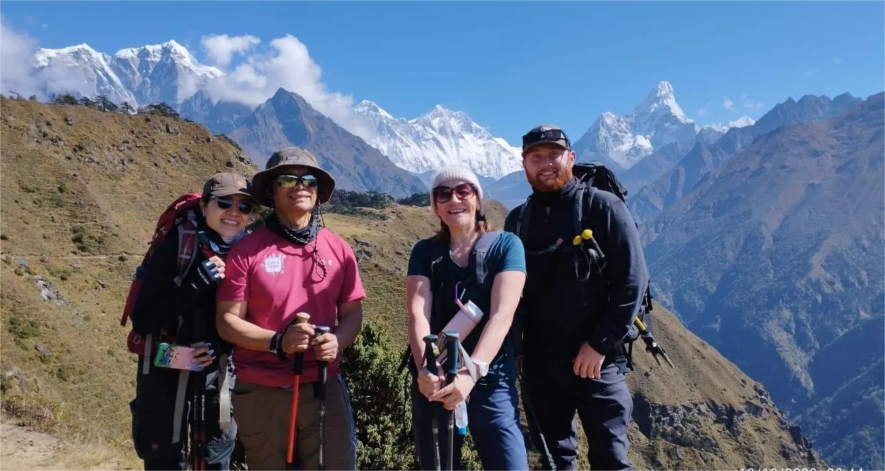
Your available vacation time is often the deciding factor when choosing between these two routes. Total door-to-door itinerary length depends on your starting trailheads, road conditions, flight schedules, and necessary acclimatization days.
- Day 1: Kathmandu / Ramechhap to Lukla (2,846m) flight; trek to Phakding (2,610m).
- Day 2: Trek Phakding to Namche Bazaar (3,440m) across Hillary Suspension Bridge.
- Day 3: Acclimatization Day in Namche (Hike to Hotel Everest View & Khumjung).
- Day 4–5: Namche to Tengboche Monastery (3,860m), then trek to Dingboche (4,410m).
- Day 6: Second Acclimatization Day in Dingboche (Hike Nangkartshang Peak 5,083m).
- Day 7–8: Dingboche to Lobuche (4,940m), then trek to Gorak Shep & Everest Base Camp (5,364m).
- Day 9: Sunrise summit of Kala Patthar (5,545m); descend to Pheriche (4,240m).
- Day 10–12: Rapid descent through Namche back to Lukla; flight return to Kathmandu.
- Day 1: Drive Kathmandu to Besisahar, 4WD jeep transfer to Dharapani (1,860m).
- Day 2–3: Trek Dharapani to Chame (2,670m), then continue to Upper Pisang (3,300m).
- Day 4: Upper trail via Ghyaru and Ngawal to Manang (3,519m) with dramatic vistas.
- Day 5: Acclimatization Day in Manang (Explore Gangapurna Lake & Ice Lake / Milarepa Cave).
- Day 6–7: Trek Manang to Yak Kharka (4,050m), then push to Thorong Phedi / High Camp (4,850m).
- Day 8: Pre-dawn summit of Thorong La Pass (5,416m); steep descent to Muktinath (3,760m).
- Day 9–11: Explore Muktinath, trek/drive through Kagbeni & Jomsom, fly or drive to Pokhara.
- Day 12–13: Scenic drive or flight from Pokhara back to Kathmandu.
Note: The Annapurna Circuit's total duration has become much more flexible in recent years due to dirt road construction on both sides of the pass. Trekkers short on time can complete the essential high-altitude circuit in 12 to 13 days by using 4WD jeeps for the lower approach and exit, whereas purists who walk the full classical circuit will want 16 to 18 days.
Everest Base Camp vs. Annapurna Circuit: Cost and Budget Breakdown
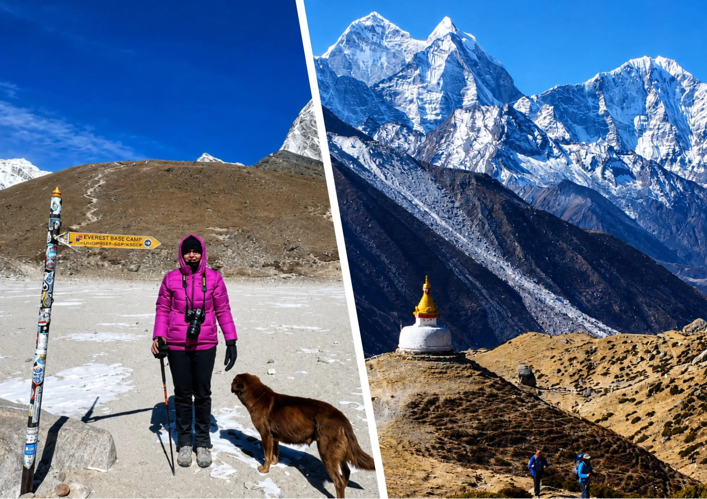
When budgeting for a Nepal trekking expedition, the total expenditure is shaped by transport logistics, government permits, guide/porter wages, teahouse accommodation, and meals.
| Cost Component | Everest Base Camp | Annapurna Circuit |
|---|---|---|
| Access Transportation | $400 – $440 USD round trip domestic flights (Kathmandu/Ramechhap ↔ Lukla). | $30 – $120 USD per person for shared 4WD jeeps or tourist buses to trailhead and exit. |
| Mandatory Permits | Sagarmatha National Park (NPR 3,000) + Khumbu Municipality Fee (NPR 3,000) ≈ $46 USD. | ACAP Permit (NPR 3,000) + TIMS Card (NPR 2,000) ≈ $38 USD. |
| Daily Food & Hot Water | $35 – $50 USD / day. Higher elevation teahouse menus are pricier due to air/porter freight. | $25 – $35 USD / day. Lower valleys have abundant local fresh produce and cheaper transport. |
| Teahouse Room Rates | $7 – $15 USD / night standard twin room (conditioned on eating meals at the lodge). | $5 – $10 USD / night standard twin room (often very affordable or free if dining in). |
| Licensed Guide & Porter | Guide: $30–$40/day · Porter: $22–$28/day (Standard industry rates with full insurance). | Guide: $30–$40/day · Porter: $22–$28/day (Standard industry rates with full insurance). |
| Average Total Guided Package | $1,350 – $2,200 USD (Standard 14-day fully supported package). | $1,050 – $1,650 USD (Standard 13 to 15-day fully supported package). |
* Prices vary by season, itinerary, operator, group size, transport arrangements, and service level. Figures reflect verified 2026/2027 market standards.
Teahouses, Food, and Accommodation: Life on the Trail

Both treks are traditional teahouse treks, meaning you sleep in family-owned mountain lodges every night and eat hearty cooked meals in their communal dining rooms. You do not need to carry tents or heavy cooking gear.
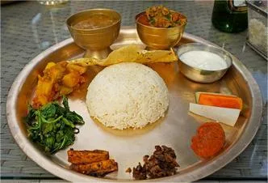
The Teahouse Dining Experience
In both regions, the communal dining hall is the warm, beating heart of teahouse life. In the late afternoon, the lodge owner fires up the central stove (fueled by wood in lower valleys and dried yak dung above the treeline), creating a cozy refuge from the sub-zero mountain dusk. Trekkers from around the globe gather to swap trail stories, drink ginger-lemon-honey tea, and eat dinner.
The reigning culinary king of the Himalayas is Dal Bhat—a wholesome platter of steamed rice, spiced lentil soup, seasonal vegetable curry, greens (saag), and savory pickles. Best of all, Dal Bhat comes with free second (and third!) helpings. Other common menu staples include fried noodles (chow mein), vegetable momo dumplings, potato rosti, Sherpa stew (shyakpa), pasta, porridge, and apple pancakes.
Room Amenities and High-Altitude Realities
- Bedrooms: Rooms are modest and unheated, containing two single beds with foam mattresses, pillows, and blankets. A quality four-season sleeping bag (-10°C to -15°C rating) is essential for both routes.
- Toilets: Lower villages feature Western-style flush toilets; higher elevations feature traditional Asian squat toilets. Above 4,500m, running water frequently freezes overnight, requiring buckets of water for flushing.
- Hot Showers: Available for an extra fee ($3 to $6 USD), ranging from reliable gas geysers in lower villages to solar-heated buckets in high camps.
- Electricity & Wi-Fi: Teahouses charge small fees ($2 to $5 USD) to recharge phones, cameras, and power banks. Wi-Fi (such as Airjaldi or Everest Link) is available at most lodges for a daily card fee, though speeds vary widely in bad weather.
Which Trek Is Less Crowded? Trail Traffic and Atmosphere
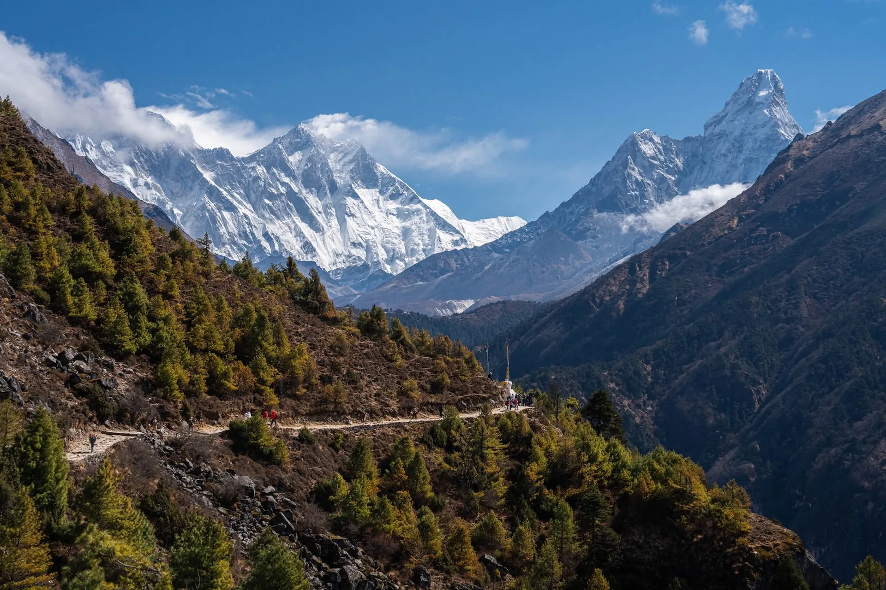
Neither Everest Base Camp nor the Annapurna Circuit can be described as empty wilderness during peak trekking months. Both are world-famous bucket-list trails that attract thousands of adventurers every season. However, the nature of the crowds feels very different on each route.
On the Everest Base Camp trail, crowds feel more concentrated because the route is fundamentally a single linear canyon. Everyone who walks up to Base Camp must walk back down the exact same trail between Gorak Shep and Lukla. In peak October and April, suspension bridges around Namche can experience brief "yak jams," and popular teahouse dining rooms fill to capacity by 5:00 PM.
On the Annapurna Circuit, trail traffic feels significantly more dispersed. Because the route is a circular loop covering over 130 to 180 kilometers, trekkers walk in one consistent direction (counter-clockwise) and spread out across dozens of different villages. Additionally, high alternative footpaths (such as the Upper Pisang trail via Ghyaru) allow hikers to bypass road sections and escape the main flow of foot traffic entirely.
To enjoy peaceful trails on either trek, begin your hiking day early (by 7:00 AM) to stay ahead of large commercial trekking groups. Alternatively, consider shoulder-season departures in late February / early March or late November, when blue skies persist and lodge occupancy drops by more than 50%.
Best Time to Trek: Season by Season
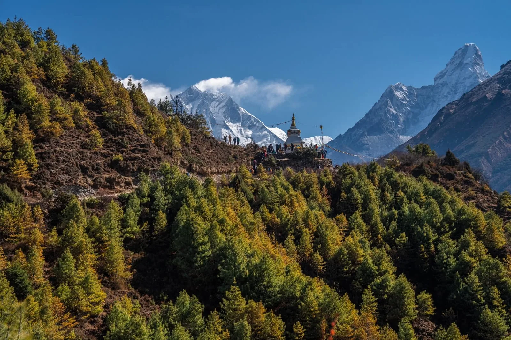
The Himalayan trekking calendar is strictly governed by the South Asian monsoon and seasonal temperature cycles. Choosing the right season is crucial for clear mountain visibility, manageable trail conditions, and high-pass safety.
| Season & Months | Everest Base Camp Conditions | Annapurna Circuit Conditions |
|---|---|---|
| Autumn (Oct – Nov) PEAK SEASON |
Crystal-clear post-monsoon skies, sharp mountain visibility, crisp sunny days, cold nights (-10°C to -15°C at high camps). The busiest and most stable weather window. | Pristine clear skies, dry trails, comfortable lower valley temperatures, and optimal safety conditions for crossing Thorong La Pass. Highest trail traffic. |
| Spring (Mar – May) PEAK SEASON |
Warmer daytime temperatures, active climbing expedition tents at EBC, blooming rhododendrons below 3,500m. Afternoon clouds can build up around high peaks. | Vibrant wildflower blooms across lower forests, thawing trails, comfortable passes. Superb time for wildlife viewing and side-trips to Tilicho Lake. |
| Winter (Dec – Feb) OFF-PEAK / COLD |
Brilliant blue skies and virtually no crowds, but extreme freezing temperatures (-20°C to -25°C at Gorak Shep). Heavy snow can block Kala Patthar. | Very quiet trails. However, heavy snow frequently blocks Thorong La Pass, and high-altitude teahouses in Thorong Phedi often close for winter. |
| Monsoon (Jun – Aug) NOT RECOMMENDED |
Frequent heavy rain in lower valleys, leeches, landslide risks on trails, and chronic Lukla flight cancellations lasting multiple days. Peaks hidden by clouds. | Lower valleys suffer heavy rain and mud. However, once past the pass into Lower Mustang, the rain-shadow microclimate remains dry and sunny. |
Permits and Logistics: Everything You Need to Organize
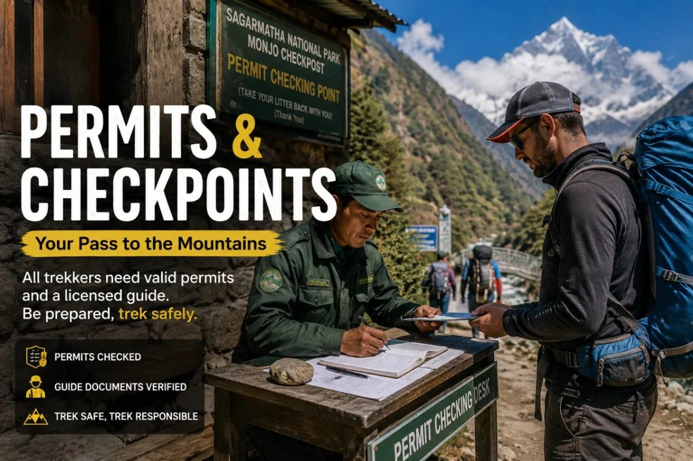
Navigating Nepal's national park permits and entry requirements is straightforward when booking through a licensed local agency like Igloo Himalaya Treks. All permits are arranged in advance before you hit the trail.
Everest Base Camp Permits & Access
- Sagarmatha National Park Entry Permit: NPR 3,000 per person (approx. $23 USD) + 13% government VAT. Issued by the Department of National Parks and Wildlife Conservation (DNPWC).
- Khumbu Pasang Lhamu Rural Municipality Entrance Fee: NPR 3,000 per person (approx. $23 USD). Collected directly at the municipal checkpoint in Lukla. (Note: TIMS cards are not used in the Khumbu region).
- Flight Logistics: During peak autumn and spring seasons, the Civil Aviation Authority of Nepal (CAAN) redirects Lukla flights from Kathmandu to Manthali Airport in Ramechhap (a 4-hour pre-dawn drive from Kathmandu) to reduce air traffic congestion.
Annapurna Circuit Permits & Access
- Annapurna Conservation Area Project (ACAP) Permit: NPR 3,000 per person (approx. $23 USD). Issued by the National Trust for Nature Conservation (NTNC).
- Trekkers' Information Management System (TIMS) Card: NPR 2,000 per person (approx. $15 USD) for international hikers, coordinated under the Nepal Tourism Board (NTB).
- Overland Logistics: No domestic flights are required to start the trek. You travel via private car, tourist bus, or 4WD jeep along the Prithvi Highway to Besisahar, then transfer into rugged mountain jeeps up the Marsyangdi River valley.
Under official Nepal Tourism Board safety regulations enforced since April 2023, foreign trekkers are required to hike with a licensed Nepali trekking guide inside protected national parks and conservation areas, including the Annapurna Conservation Area. This policy ensures traveler safety, rapid emergency search-and-rescue coordination, and fair employment for local mountain professionals.
Which Trek Is Better for Beginners?

We avoid labeling either Everest Base Camp or the Annapurna Circuit as "easy." Both are serious high-altitude wilderness treks in the world's most formidable mountain range. However, for a motivated traveler embarking on their very first multi-day Himalayan trek, one route holds a slight advantage.
The Annapurna Circuit is generally better suited for first-time Himalayan trekkers. The reason is physiological: the Circuit starts low (under 1,900 m) in thick, oxygen-rich air. You have a full week of steady daily hiking across gentle valley trails to build your mountain fitness, test your gear, break in your boots, and acclimatize before reaching extreme altitudes.
In contrast, Everest Base Camp launches you straight into 2,846 meters at Lukla and climbs relentlessly into 3,440 meters by Day 2. If your body takes longer to acclimatize or you catch a minor head cold, managing symptoms at 4,000+ meters in the Khumbu is far more demanding.
Beginner Self-Assessment: Find Your Match
Which Trek Should You Choose? Editorial Decision Matrix
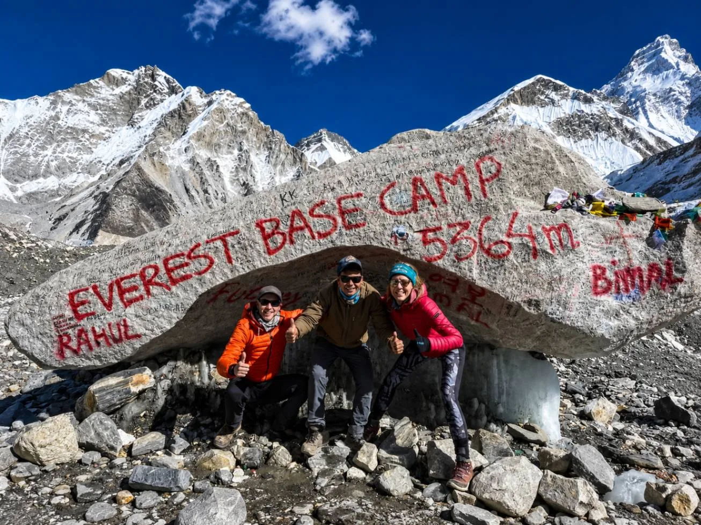
When all the comparison tables, altitude graphs, and packing checklists are set aside, the choice comes down to the fundamental character of the adventure you want to remember for the rest of your life.
At-a-Glance Comparative Decision Matrix
Editorial assessment based on 25+ years of guiding both trailsChoose Everest Base Camp If:
- Reaching Mt. Everest is a deeply personal, lifelong bucket-list goal.
- You crave the feeling of being dwarfed by the world's most famous 8,000-meter peaks.
- You are fascinated by Himalayan mountaineering history and Sherpa Buddhist culture.
- You have good physical endurance and are comfortable sleeping in sub-zero alpine conditions for a week.
- You prefer taking a scenic mountain flight rather than spending long hours in mountain jeeps.
Choose the Annapurna Circuit If:
- You want to see Nepal's complete landscape tapestry, from tropical jungle to Tibetan high desert.
- You love cultural variety and want to meet Gurung, Manange, Hindu, and Thakali communities.
- Crossing a monumental high mountain pass (Thorong La at 5,416m) is high on your adventure wishlist.
- You prefer a more gradual altitude acclimatization schedule over 7 to 9 days.
- You want a flexible, budget-friendly route that avoids unpredictable mountain flights.
"There is no universal winner between Everest Base Camp and the Annapurna Circuit. The best trek is simply the one that speaks to the specific adventure your spirit is yearning for."
Frequently Asked Questions: Everest vs. Annapurna
Select a category below to explore expert answers to the most common questions travelers ask when deciding between Everest Base Camp and the Annapurna Circuit:
General Comparison

Ready to Choose Your Himalayan Adventure?
Whether you want the legendary high trails of the Khumbu beneath Everest or the extraordinary ecological diversity of the Annapurna massif, start planning a bespoke journey tailored to your fitness, dates, and travel style.